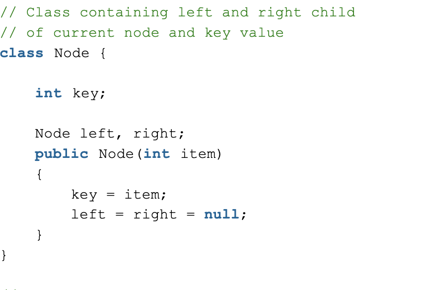
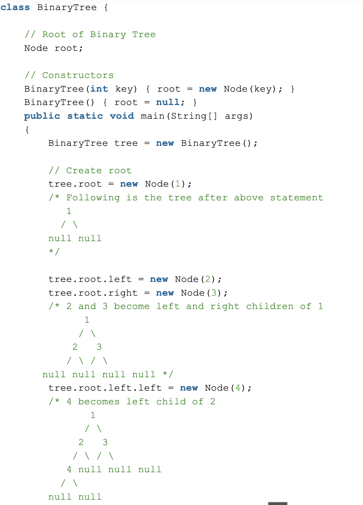

What is a Binary Tree?
A Binary Tree Data Structure is a hierarchical data structure in which each node has at most two children, referred to as the left child and the right child. It is commonly used in computer science for efficient storage and retrieval of data, with various operations such as insertion, deletion, and traversal.

When would you use a binary tree?
- Search algorithms: Binary search algorithms use the structure of binary trees to efficiently search for a specific element. The search can be performed in O(log n) time complexity, where n is the number of nodes in the tree.
- Sorting algorithms: Binary trees can be used to implement efficient sorting algorithms, such as binary search tree sort and heap sort.
- Database systems: Binary trees can be used to store data in a database system, with each node representing a record. This allows for efficient search operations and enables the database system to handle large amounts of data
Example of implementing a binary tree in Java:

